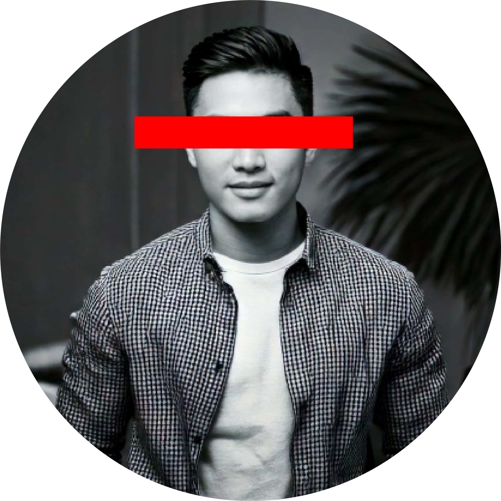

당신..
괴담종합상회
괴담, 좋아하시나요?
그래서 준비했습니다!
괴담 생존 전문가들이 추천하는 필수 아이템을 한눈에!
언제, 어디서 괴담이 시작될지 모르는 현대인들을 위한
괴담 생존 아이템 전문 스토어에 오신 것을 환영합니다.
1. 일상 방어구
일상 속 괴담으로부터의 피해를 방지해 보세요.

평온 목걸이
외출 시 착용하면 악령의 접근을 차단하는 부적 목걸이.
유령 퇴치 모자
착용자 주변의 기운을 안정시켜 유령의 주목을 피함.
손목 퇴마 보호대
손목에 착용 시, 귀신이 손목을
잡아 끄는 것을 방지.
2. 탐지 도구
괴담인지 헷갈린다면?
이 도구로 한번 판별해보세요.

위험 감지 키링
불길한 기운이 감지되면
진동으로 경고!
심령 탐지 펜라이트
어두운 공간에서 특수 파장으로
실체를 드러내는 손전등.
존재 확인 거울
거울에 비치지 않는 이질적인 존재를
감지하는 휴대용 거울.
3. 공간 정화 아이템
지금 계신 공간이 불길하시다구요?
이런 아이템으로 간편하게 정화해보세요.

불길 제거 스프레이
소금과 정화 성분으로 방 안의
사악한 기운을 일시적으로 제거.
방어 라인 테이프
바닥에 붙이면 악령이 넘지 못하는
경계선 생성!
존재 확인 거울
거울에 비치지 않는 이질적인 존재를
감지하는 휴대용 거울.

강모씨, 프리랜서, 35세
구매일시 : 2025.02.19, 안심 차 티백 구매
예전엔 악몽때문에 한시간도 못 잤는데,
안심 차 티백 덕분에 이젠 8시간 푹 잘 수 있어요.
김모씨, 학생, 24세
구매일시 : 2024.03.02, 불길 제거 스프레이 구매
처음엔 반신반의했어요. 그런데 뿌리고 나서부터 방 안에서
발자국 소리가 안 들려요.
원래 바람 때문이라고 생각했는데... 아무튼 요즘은 조용해서
공부에 집중이 잘 됩니다.
박모씨, 직장인, 29세
구매일시 : 2024.08.17, 존재 확인 거울 구매
처음엔 '이런 게 뭐가 필요해~' 했는데, 어느 순간부터
제 뒤에 있던 애가 거울에 비치기 시작했어요.
이젠 아예 같이 셀카도 찍어요. 인스타엔 못 올리지만요ㅋㅋ